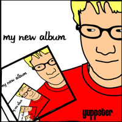

Here's a diverse collection of tracks with influences from video games to indie rock to ehh really distorted stuff. "Mirror eyed..." and "i'm gonna football tackle you" feature good melodies and the "pecan medley" is a big mix of tracks that were abandoned for various reasons. Enjoy!